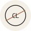

Coach LogicAlpheaus Daniel · Software Developer
I build clarity into complex systems.
Computer Engineering student building web applications and developer tools, with a practical focus on how software works beneath the surface.
Web applicationsDeveloper toolsPractical engineering